La vidéo de *Pursuing AI* dissèque l'impact tectonique du nouveau modèle d'intelligence artificielle **Qwen 3.8 Max** d'Alibaba, un monstre de 2400 milliards de paramètres à poids ouverts qui bouscule l'hégémonie des géants américains comme OpenAI, Anthropic et Google. L'analyse met en lumière un changement de paradigme fondamental dans l'industrie : on passe de la simple course au meilleur chatbot conversationnel à la conception d'agents capables d'effectuer de véritables travaux d'ingénierie autonome sur de longues périodes.
Sur le plan technique, la vidéo détaille comment Qwen 3.8 Max combine une architecture massive de mélange d'experts (MoE) — avec seulement 95 milliards de paramètres actifs lors de l'inférence — à une fenêtre de contexte d'un million de jetons et à des capacités multimodales natives (texte, images, vidéo, documents). Le créateur illustre l'efficacité de cette architecture à travers des démonstrations saisissantes : une autonomie de plus de 10 jours en écriture de code sans intervention humaine, et une boucle d'ingénierie fermée pour l'optimisation de conceptions matérielles numériques.
Pour les créateurs de contenu vidéo et les professionnels de l'IA, cette avancée représente un tournant stratégique majeur. La démocratisation imminente de poids ouverts aussi puissants redéfinit les workflows de production, illustrant comment l'écosystème chinois (aux côtés de DeepSeek, Kimi et GLM) ne se contente plus de rattraper le retard occidental, mais définit désormais la frontière technologique, offrant aux créateurs des outils d'automatisation et de raisonnement multimodal d'une puissance inédite.
Qwen 3.8 Max vient de changer la course à l'intelligence artificielle pour toujours. Il y a deux semaines, tout le monde se disputait pour savoir qui avait le modèle d'IA le plus intelligent. OpenAI, Anthropic, Google. Puis Alibaba a débarqué et a lâché l'air de rien un monstre de 2400 milliards de paramètres qui pourrait bien être le modèle d'IA à poids ouverts le plus ambitieux jamais construit.
Interface & Outils : Interface de site web de présentation de modèle d'IA (Qwen) et éditeur de code / interface de développement sur ordinateur portable.
Contenu textuel & Code : Texte de présentation : "Today, we are officially releasing Qwen 3.8-Max, the most capable model in the Qwen family to date... 2.4T parameters (958 active)...", lignes de code source et graphiques de benchmarks (SWE-Pro, TerminalBench-2.1, PaperBench, FrontierSWE).
Action / Démonstration : Défilement de la page web officielle d'annonce de Qwen 3.8-Max et affichage de séquences de démonstration technique.
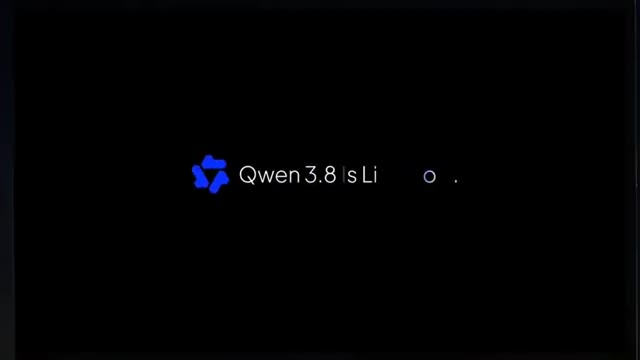
🔍 Agrandir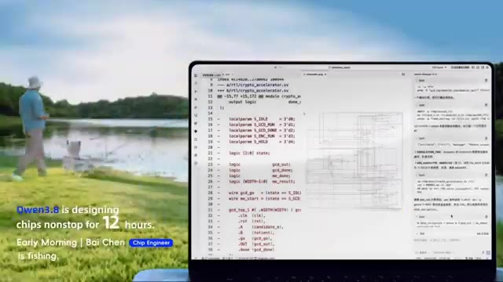
🔍 Agrandir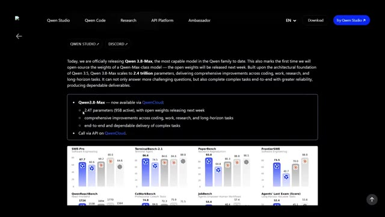
🔍 AgrandirNon pas parce qu'il écrit de meilleurs e-mails, non pas parce qu'il obtient un score plus élevé sur un autre benchmark "Trust Me Bro", mais parce que ce truc a passé plus de 10 jours à construire du code de manière autonome, a optimisé des conceptions matérielles à travers des centaines d'itérations d'ingénierie, et peut littéralement observer son propre écran pour corriger des erreurs tout en travaillant.
Interface & Outils : Interface de développement et de démonstration d'IA avec affichage de code, visualiseur de structure moléculaire 3D et tableau de bord statistique.
Contenu textuel & Code : Sur l'image 1 : code Python, structure cristalline 3D et textes "Qwen3.8 is verifying protein sources." et "Noon | Leon Biology Professor is playing tennis.". Sur l'image 2 : "16 Days Autonomous Coding", "172 Issues | 127 PRs | 265 Commits", "Building oh-my-cli harness", "As of the making of this video".
Action / Démonstration : Démonstration visuelle des capacités d'un modèle d'IA effectuant du codage autonome et analysant des données biologiques en parallèle d'une activité de tennis virtuelle.
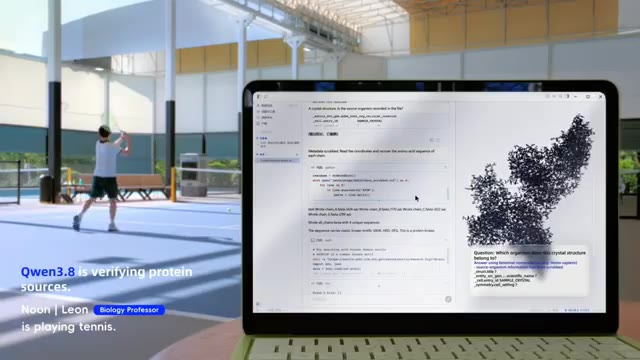
🔍 Agrandir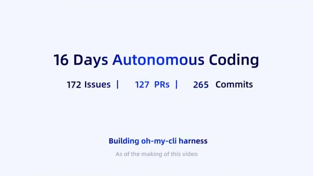
🔍 AgrandirSelon Alibaba, il combine un mélange massif d'architectures d'experts avec un contexte d'un million de jetons, une compréhension multimodale, et prévoit de publier les poids publiquement la semaine prochaine. Si ces affirmations se vérifient, la course à l'IA vient de devenir beaucoup plus intéressante. C'est Pursuing AI et vous regardez le rapport de recherche.
Interface & Outils : Écrans de démonstration technique et graphique de présentation de l'IA (animation de concepts et modélisation).
Contenu textuel & Code : Textes visibles : "Everything It Sees", "Inputs", "Science Question Photo", "Raw Video Clips", et en bas à droite "Process visualization - final 3D model generated by Qwen 3.8-Max".
Action / Démonstration : Présentation visuelle des fonctionnalités d'entrée et de compréhension multimodale d'un modèle d'intelligence artificielle.
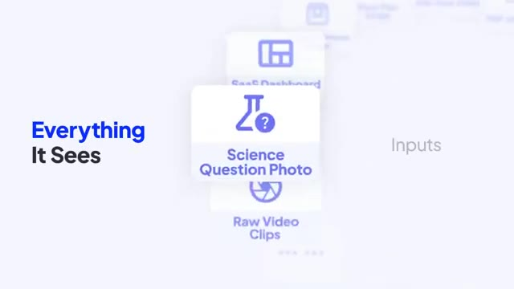
🔍 Agrandir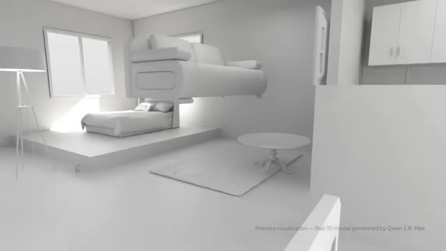
🔍 AgrandirPendant la dernière année, chaque modèle de pointe a poursuivi le même objectif. Construire un meilleur chatbot. Qwen semble avoir une idée différente. Au lieu de rendre l'IA meilleure pour répondre aux questions, ils essaient de la rendre meilleure pour effectuer de véritables travaux. Les chiffres phares sont absurdes. 2,4 billions de paramètres.
Interface & Outils : Interface logicielle de développement/visualisation (Image 1), traitement de texte/documents (Image 2), et site web officiel de Qwen Studio / Qwen 3.8-Max (Image 3).
Contenu textuel & Code : Sur l'image 1 : Texte « Qwen3.8 is generating contracts automatically. Evening | An An Lawyer is unwinding outdoors. » Sur l'image 2 : Texte « Always-on Workmate ». Sur l'image 3 : Texte de présentation « Today, we are officially releasing Qwen 3.8-Max, the most capable model in the Qwen family to date... 2.4 trillion parameters... » ainsi que divers graphiques de benchmarks (SWE-Pro, TerminalBench-2.1, PaperBench, FrontierSWE, etc.).
Action / Démonstration : Présentation visuelle et démonstration des capacités de Qwen à travers des interfaces de travail, des cas d'usage juridiques et des spécifications techniques de modèles d'IA.
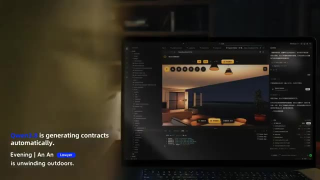
🔍 Agrandir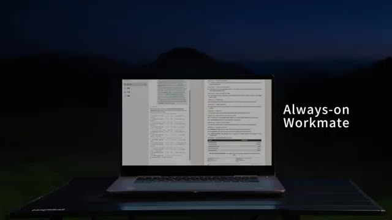
🔍 Agrandir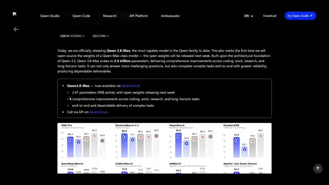
🔍 AgrandirSeulement environ 95 milliards d'experts sont actifs lors de l'inférence, ce qui maintient le coût de calcul gérable tout en offrant des performances de niveau supérieur. Il accepte le texte, les images, la vidéo et les documents, prend en charge une fenêtre de contexte d'un million de jetons, et Alibaba affirme que les poids ouverts arrivent bientôt.
Interface & Outils : Interface web de présentation technique de QWen Studio et interface de développement logiciel (IDE/éditeur de code).
Contenu textuel & Code : Texte sur QWen 3.8-Max (2.4T parameters, 958 active), graphiques de performance (SWE-Pro, TerminalBench-2.1), icônes d'entrées multiples (PDF, 100-hour Video, Floor Plan Image) et panneau de contrôles de débogage.
Action / Démonstration : Navigation à travers la documentation technique et affichage des capacités multimodales du modèle d'intelligence artificielle.
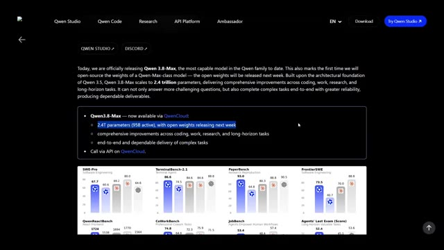
🔍 Agrandir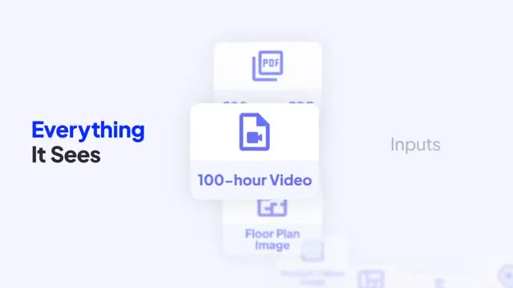
🔍 Agrandir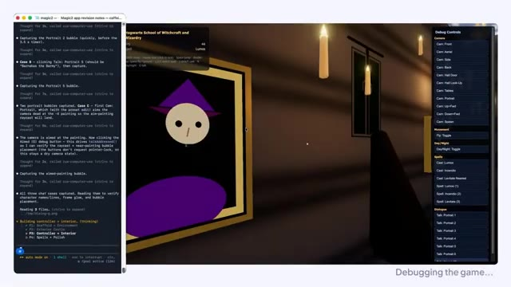
🔍 AgrandirMais la taille brute n'est pas la partie intéressante. La partie intéressante est ce qu'ils ont réellement testé. Au lieu de demander au modèle de résoudre un autre examen de mathématiques, Alibaba lui a donné de vrais problèmes d'ingénierie. Une démonstration a montré le modèle travaillant de manière autonome pendant plus de 10 jours, en partant d'un projet vide et en améliorant continuellement le logiciel sans intervention humaine.
Interface & Outils : Environnement de développement logiciel avec terminal intégré et interface de jeu 3D, application de démonstration médicale 3D, et diapositives de présentation.
Contenu textuel & Code : Texte affiché : "magic2", "Debugging the game...", "Hogwarts School of Witchcraft and Wizardry", "16 Days Autonomous Coding", "172 Issues | 127 PRs | 265 Commits", "Building oh-my-cli harness".
Action / Démonstration : Débogage d'un jeu vidéo par intelligence artificielle, visualisation d'exercices de rééducation en 3D, et affichage de statistiques de performances de codage autonome.
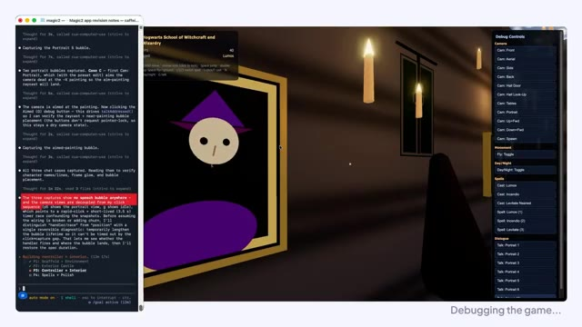
🔍 Agrandir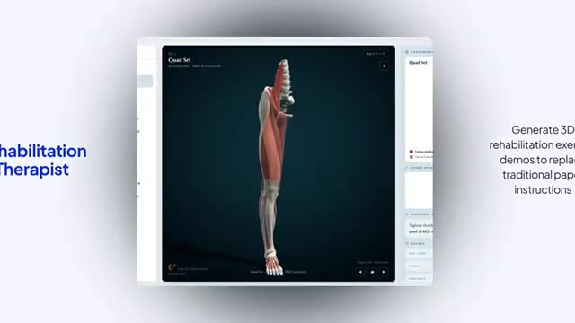
🔍 Agrandir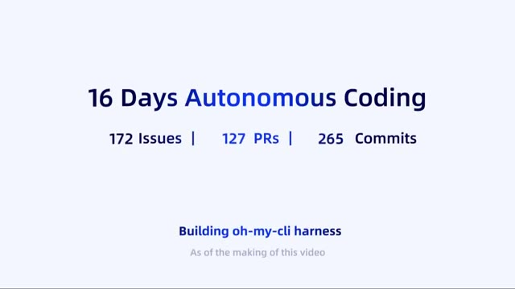
🔍 AgrandirUne autre montrait la conception de matériel numérique dans une boucle d'ingénierie fermée, compilant, testant, corrigeant et optimisant de manière répétée jusqu'à ce que le circuit se réduise considérablement tout en respectant les contraintes de synchronisation. Ces démonstrations sont présentées par Alibaba comme des exemples d'ingénierie autonome à long terme plutôt que de simples interactions avec des chatbots.
Interface & Outils : Éditeur de code (VS Code ou similaire) et interface de réseau social (style X/Twitter).
Contenu textuel & Code : Texte « Init Oh-my-cli with Qwen3.8-Max self-testing » et lignes de code source TypeScript. Texte « Autonomous Exploration to Continuous Evolution » avec un flux de publications sur l'exploration autonome et des objectifs persistants (« /goal all tests pass and list is clean »).
Action / Démonstration : Présentation de lignes de code informatique en cours d'auto-test, suivie d'une interface montrant des publications sur l'exploration et l'évolution autonomes des agents d'IA.
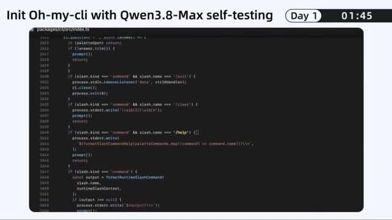
🔍 Agrandir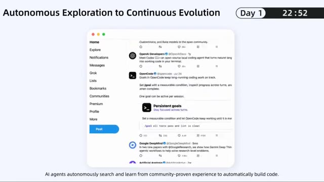
🔍 AgrandirC'est un point de comparaison très différent. Parce qu'écrire du code est une chose, mais déboguer, tester, refactoriser, trouver ses propres erreurs, et répéter ce processus des centaines de fois sans abandonner, cela commence à ressembler beaucoup plus à un ingénieur qu'à de l'autocomplétion. Et selon les résultats des benchmarks d'Alibaba, QEN 3.8 Max obtient également des performances compétitives par rapport aux meilleurs modèles propriétaires en matière de raisonnement multimodal, de compréhension de documents et de plusieurs évaluations axées sur les agents, tout en restant à la traîne sur certains benchmarks de génie logiciel comme
Interface & Outils : Interface utilisateur de chat textuel, application de développement de bureau et tableau de benchmarks de performance de modèles d'IA.
Contenu textuel & Code : Texte affichant "One Message, A Desktop App", "@User @Qwen3.8-Max We need a desktop task center. Let's make it happen.", "Got it", ainsi que de multiples graphiques de benchmarks (SWE-Pro, TerminalBench-2.1, PaperBench, FrontierSWE, QwenReactBench, CoWorkBench, JobBench, Agents' Last Exam, BabyVision, CharXiv, ERQA, PerceptionBench, LVBench, Vision2Web, MobileWorld, OSWorld-Verified) avec des scores comparatifs pour Qwen 3.8 Max, Qwen 3.7 Max, Opus4.8, Fable5, Gemini 3.1-Pro, et GPT5.6 Sol.
Action / Démonstration : Affichage successif d'une conversation de requête utilisateur, d'un espace de travail de génération d'application (système solaire en rendu 3D), puis d'un tableau récapitulatif des performances des benchmarks d'évaluation.
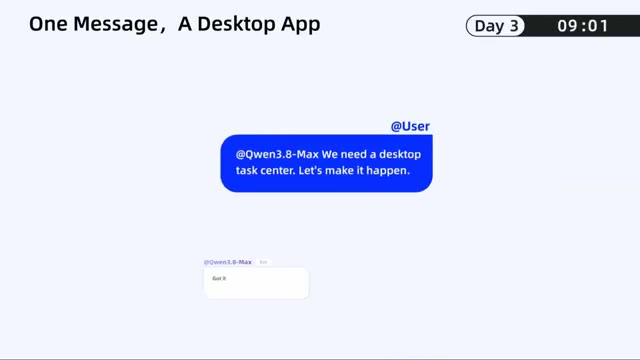
🔍 Agrandir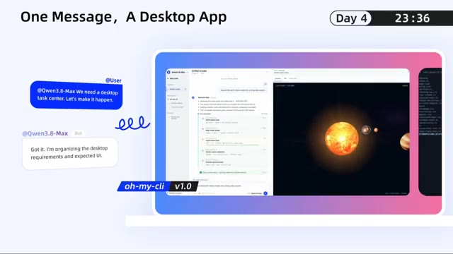
🔍 Agrandir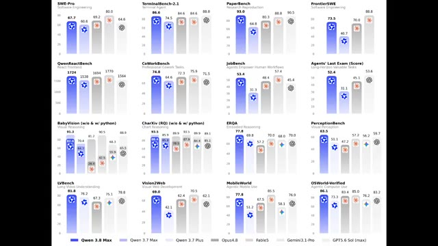
🔍 AgrandirSWE Bench Pro. Maintenant, les graphiques de benchmarks sont fondamentalement la cryptomonnaie de l'IA. Tout le monde en a un, personne n'est d'accord sur celui qui compte. Mais la plus grande histoire n'est pas de savoir si Quen est numéro un. C'est que la Chine ne court plus après la frontière. Elle contribue à la définir.
Interface & Outils : Interface logicielle de développement/interface utilisateur web de documentation ou d'outil de code.
Contenu textuel & Code : Image 1 : "Day 6", "01:50", "Keep Evolving oh-my-cli", et une liste de commits Git (feat(cli): surface...). Image 2 : Titres de chapitres "A Brief History of Geologic Time", "Continents Ranked by Area", "Major Climate Types", et la section centrale "02 Geography • Earth & Nature".
Action / Démonstration : Affichage d'interfaces de développement logiciel suivies d'une vue d'ensemble de plusieurs documents ou graphiques de cours/documentation organisés en grille.
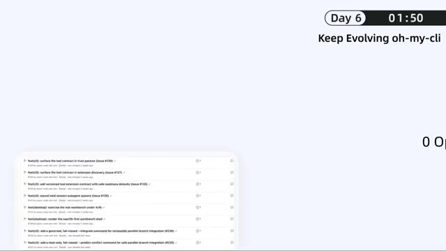
🔍 Agrandir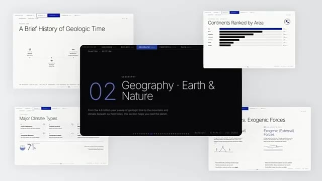
🔍 AgrandirPendant des années, l'hypothèse était simple. L'Amérique construit les modèles de pointe. La Chine construit des copies moins chères. Cette hypothèse devient de plus en plus difficile à défendre. Entre DeepSeq, Kimi, GLM, et maintenant Quen 3.8 Max, l'IA à poids ouverts devient le plus grand avantage concurrentiel de la Chine.
Interface & Outils : Interface logicielle de tableaux de bord et d'analyse financière interactive (sans rapport direct avec le sujet textuel de la vidéo).
Contenu textuel & Code : Textes visibles : "HARBO", "RIVE", "10", "8", "1:13", "BUSINESS PLAN ROADMAP", "I'm a Commercial Operations Director. Build dynamic business roadmaps for me.", "Financial Analyst", ainsi que divers symboles boursiers (MSFT, AMZN, NVDA, AAPL, etc.).
Action / Démonstration : Défilement et affichage successifs d'interfaces logicielles d'analyse et de gestion de données.
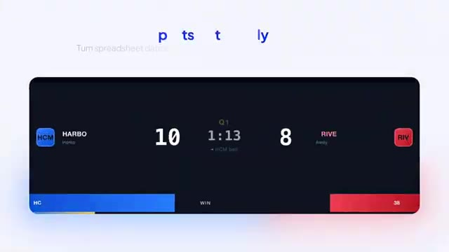
🔍 Agrandir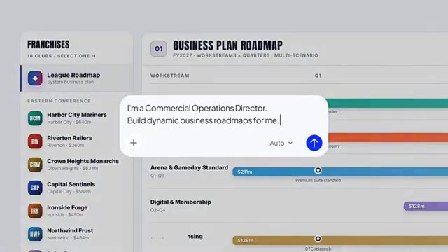
🔍 Agrandir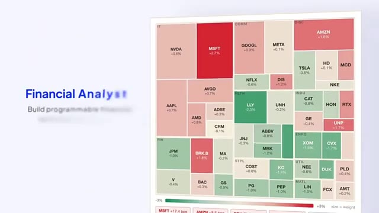
🔍 AgrandirEt si Alibaba publie réellement les pondérations complètes la semaine prochaine, le plus grand lancement d'IA de l'été pourrait bien ne pas venir d'OpenAI, d'Anthropic ou de Google. Il pourrait venir de Hangzhou.
Interface & Outils : Interface de dialogue épurée superposée à un tableau de bord financier.
Contenu textuel & Code : Texte affiché dans la bulle : « I'm a Full Stack Engineer. Build production-ready apps for me. » On y voit également un bouton d'ajout (+), un sélecteur de mode « Auto » et un bouton de validation fléché vers le haut sur fond bleu.
Action / Démonstration : Affichage d'une invite textuelle (prompt) invitant l'intelligence artificielle à concevoir des applications prêtes pour la production, superposée à des données boursières.
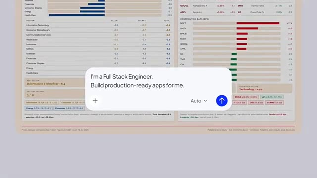
🔍 Agrandir